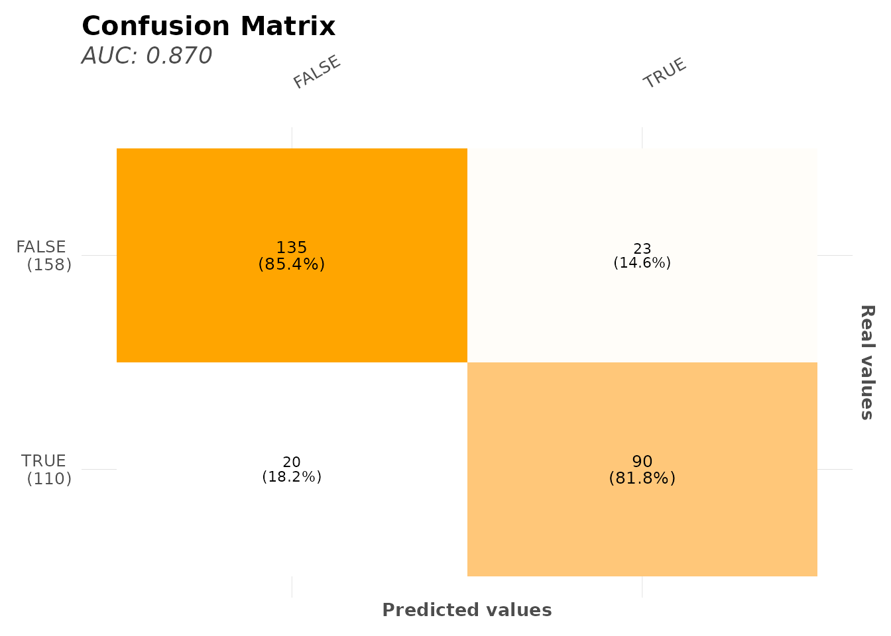
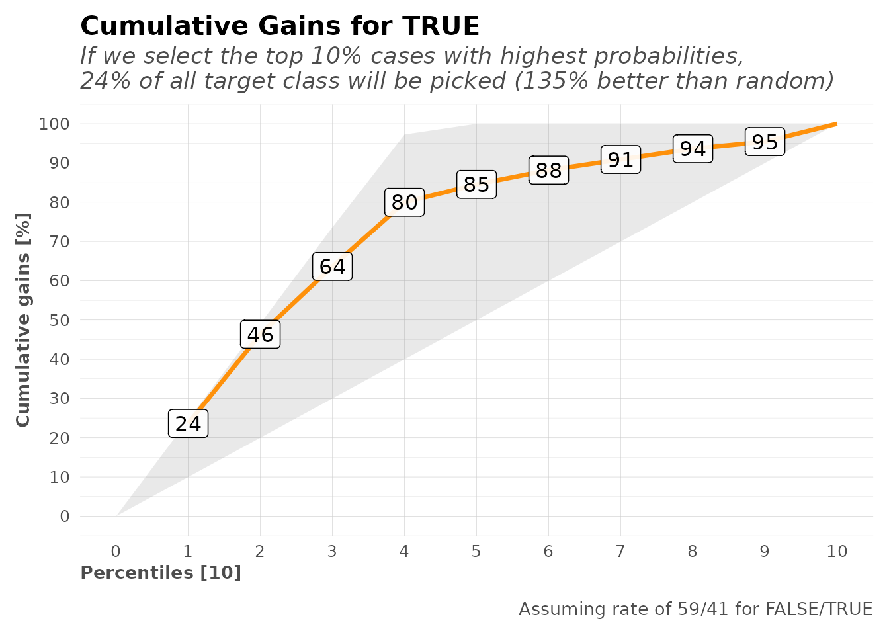
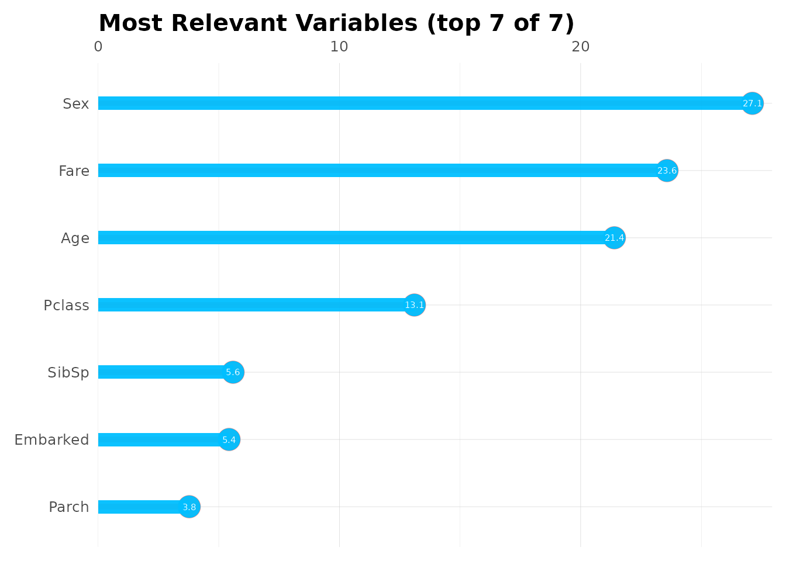
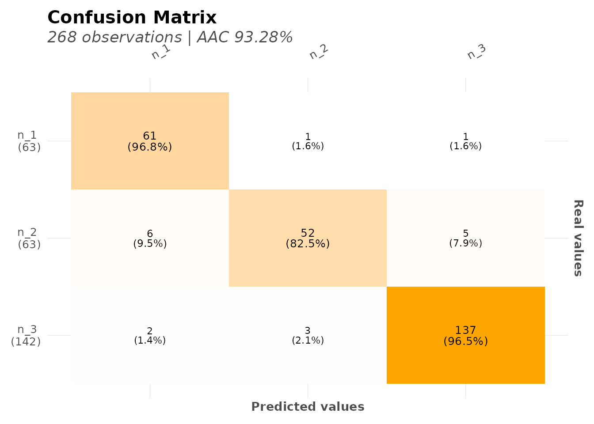
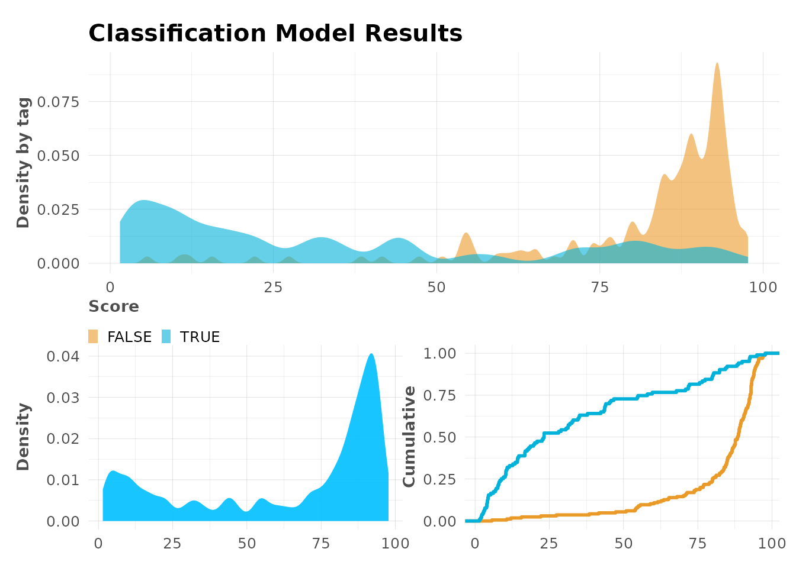

Machine Learning
Bernardo Lares
2025-11-25
Source:vignettes/machine-learning.Rmd
machine-learning.RmdIntroduction
The lares package provides a streamlined interface to
h2o’s AutoML for automated machine learning. This vignette demonstrates
how to build, evaluate, and interpret models with minimal code.
Setup
Install and load required packages:
h2o must be installed separately:
# Install h2o (run once)
# install.packages("h2o")
library(h2o)
# Initialize h2o quietly for vignette
Sys.unsetenv("http_proxy")
Sys.unsetenv("https_proxy")
h2o.init(nthreads = -1, max_mem_size = "2G", ip = "localhost")
#>
#> H2O is not running yet, starting it now...
#>
#> Note: In case of errors look at the following log files:
#> /tmp/RtmpcWj43R/file256037072506/h2o_runner_started_from_r.out
#> /tmp/RtmpcWj43R/file25607a88de01/h2o_runner_started_from_r.err
#>
#>
#> Starting H2O JVM and connecting: ... Connection successful!
#>
#> R is connected to the H2O cluster:
#> H2O cluster uptime: 1 seconds 501 milliseconds
#> H2O cluster timezone: UTC
#> H2O data parsing timezone: UTC
#> H2O cluster version: 3.44.0.3
#> H2O cluster version age: 1 year, 11 months and 5 days
#> H2O cluster name: H2O_started_from_R_runner_mwl453
#> H2O cluster total nodes: 1
#> H2O cluster total memory: 2.00 GB
#> H2O cluster total cores: 4
#> H2O cluster allowed cores: 4
#> H2O cluster healthy: TRUE
#> H2O Connection ip: localhost
#> H2O Connection port: 54321
#> H2O Connection proxy: NA
#> H2O Internal Security: FALSE
#> R Version: R version 4.5.2 (2025-10-31)
h2o.no_progress() # Disable progress barsPipeline

In short, these are the steps that happen on
h2o_automl’s backend:
Input Processing: The function receives a dataframe
dfand the dependent variableyto predict. Setseedfor reproducibility.Model Type Detection: Automatically decides between classification (categorical) or regression (continuous) based on
y’s class and unique values (controlled bythreshparameter).Data Splitting: Splits data into test and train datasets. Control the proportion with
splitparameter. Replicate this withmsplit().-
Preprocessing:
- Center and scale numerical values
- Remove outliers with
no_outliers - Impute missing values with MICE (
impute = TRUE) - Balance training data for classification
(
balance = TRUE) - Replicate with
model_preprocess()
-
Model Training: Runs
h2o::h2o.automl()to train multiple models and generate a leaderboard sorted by performance. Customize with:-
max_modelsormax_time -
nfoldsfor k-fold cross-validation -
exclude_algosandinclude_algos
-
Model Selection: Selects the best model based on performance metric (change with
stopping_metric). Useh2o_selectmodel()to choose an alternative.Performance Evaluation: Calculates metrics and plots using test predictions (unseen data). Replicate with
model_metrics().Results: Returns a list with inputs, leaderboard, best model, metrics, and plots. Export with
export_results().
Quick Start: Binary Classification
Let’s build a model to predict Titanic survival:
data(dft)
# Train an AutoML model
# Binary classification
model <- h2o_automl(
df = dft,
y = "Survived",
target = "TRUE",
ignore = c("Ticket", "Cabin", "PassengerId"),
max_models = 10,
max_time = 120,
impute = FALSE
)
#> # A tibble: 2 × 5
#> tag n p order pcum
#> <lgl> <int> <dbl> <int> <dbl>
#> 1 FALSE 549 61.6 1 61.6
#> 2 TRUE 342 38.4 2 100
#> train_size test_size
#> 623 268
#> model_id auc logloss aucpr
#> 1 XRT_1_AutoML_1_20251125_181343 0.8613359 0.4448440 0.8211963
#> 2 GBM_2_AutoML_1_20251125_181343 0.8583649 0.4320854 0.8205075
#> 3 GBM_3_AutoML_1_20251125_181343 0.8575161 0.4377482 0.8097954
#> mean_per_class_error rmse mse
#> 1 0.1982924 0.3732340 0.1393036
#> 2 0.1918985 0.3664474 0.1342837
#> 3 0.2041406 0.3698799 0.1368111
#> | | | 0% | |======================================================================| 100%
#> | | | 0% | |======================================================================| 100%
#> Model (1/10): XRT_1_AutoML_1_20251125_181343
#> Dependent Variable: Survived
#> Type: Classification (2 classes)
#> Algorithm: DRF
#> Split: 70% training data (of 891 observations)
#> Seed: 0
#>
#> Test metrics:
#> AUC = 0.87014
#> ACC = 0.16045
#> PRC = 0.12903
#> TPR = 0.18182
#> TNR = 0.14557
#>
#> Most important variables:
#> Sex (27.1%)
#> Fare (23.6%)
#> Age (21.4%)
#> Pclass (13.1%)
#> SibSp (5.6%)
# View results
print(model)
#> Model (1/10): XRT_1_AutoML_1_20251125_181343
#> Dependent Variable: Survived
#> Type: Classification (2 classes)
#> Algorithm: DRF
#> Split: 70% training data (of 891 observations)
#> Seed: 0
#>
#> Test metrics:
#> AUC = 0.87014
#> ACC = 0.16045
#> PRC = 0.12903
#> TPR = 0.18182
#> TNR = 0.14557
#>
#> Most important variables:
#> Sex (27.1%)
#> Fare (23.6%)
#> Age (21.4%)
#> Pclass (13.1%)
#> SibSp (5.6%)That’s it! h2o_automl() handles:
- Train/test split
- One-hot encoding of categorical variables
- Model training with multiple algorithms
- Hyperparameter tuning
- Model selection
Understanding the Output
The model object contains:
names(model)
#> [1] "model" "y" "scores_test" "metrics"
#> [5] "parameters" "importance" "datasets" "scoring_history"
#> [9] "categoricals" "type" "split" "threshold"
#> [13] "model_name" "algorithm" "leaderboard" "project"
#> [17] "ignored" "seed" "h2o" "plots"Key components: - model: Best h2o model -
metrics: Performance metrics - importance:
Variable importance - datasets: Train/test data used -
parameters: Configuration used
Model Performance
Metrics
View detailed metrics:
# All metrics
model$metrics
#> $dictionary
#> [1] "AUC: Area Under the Curve"
#> [2] "ACC: Accuracy"
#> [3] "PRC: Precision = Positive Predictive Value"
#> [4] "TPR: Sensitivity = Recall = Hit rate = True Positive Rate"
#> [5] "TNR: Specificity = Selectivity = True Negative Rate"
#> [6] "Logloss (Error): Logarithmic loss [Neutral classification: 0.69315]"
#> [7] "Gain: When best n deciles selected, what % of the real target observations are picked?"
#> [8] "Lift: When best n deciles selected, how much better than random is?"
#>
#> $confusion_matrix
#> Pred
#> Real FALSE TRUE
#> FALSE 23 135
#> TRUE 90 20
#>
#> $gain_lift
#> # A tibble: 10 × 10
#> percentile value random target total gain optimal lift response score
#> <fct> <chr> <dbl> <int> <int> <dbl> <dbl> <dbl> <dbl> <dbl>
#> 1 1 TRUE 10.1 26 27 23.6 24.5 135. 23.6 85.9
#> 2 2 TRUE 20.1 25 27 46.4 49.1 130. 22.7 77.1
#> 3 3 TRUE 30.2 19 27 63.6 73.6 111. 17.3 62.9
#> 4 4 TRUE 39.9 18 26 80 97.3 100. 16.4 53.6
#> 5 5 TRUE 50 5 27 84.5 100 69.1 4.55 37.1
#> 6 6 TRUE 60.1 4 27 88.2 100 46.8 3.64 22.2
#> 7 7 TRUE 69.8 3 26 90.9 100 30.3 2.73 17.6
#> 8 8 TRUE 79.9 3 27 93.6 100 17.3 2.73 11.8
#> 9 9 TRUE 89.9 2 27 95.5 100 6.15 1.82 9.25
#> 10 10 TRUE 100 5 27 100 100 0 4.55 3.05
#>
#> $metrics
#> AUC ACC PRC TPR TNR
#> 1 0.87014 0.16045 0.12903 0.18182 0.14557
#>
#> $cv_metrics
#> # A tibble: 20 × 8
#> metric mean sd cv_1_valid cv_2_valid cv_3_valid cv_4_valid cv_5_valid
#> <chr> <dbl> <dbl> <dbl> <dbl> <dbl> <dbl> <dbl>
#> 1 accuracy 0.824 0.0430 0.84 0.8 0.76 0.855 0.863
#> 2 auc 0.863 0.0306 0.850 0.848 0.835 0.868 0.913
#> 3 err 0.176 0.0430 0.16 0.2 0.24 0.145 0.137
#> 4 err_cou… 22 5.43 20 25 30 18 17
#> 5 f0point5 0.753 0.0638 0.780 0.662 0.710 0.806 0.804
#> 6 f1 0.771 0.0566 0.744 0.713 0.746 0.795 0.857
#> 7 f2 0.794 0.0755 0.711 0.771 0.786 0.785 0.917
#> 8 lift_to… 2.74 0.418 2.98 3.29 2.31 2.76 2.34
#> 9 logloss 0.445 0.0311 0.443 0.447 0.495 0.429 0.412
#> 10 max_per… 0.246 0.0464 0.310 0.207 0.282 0.222 0.211
#> 11 mcc 0.632 0.0858 0.632 0.574 0.528 0.683 0.745
#> 12 mean_pe… 0.818 0.0411 0.803 0.804 0.767 0.838 0.875
#> 13 mean_pe… 0.182 0.0411 0.197 0.196 0.233 0.162 0.125
#> 14 mse 0.140 0.0125 0.139 0.142 0.160 0.132 0.127
#> 15 pr_auc 0.821 0.0639 0.789 0.726 0.842 0.859 0.887
#> 16 precisi… 0.742 0.0792 0.806 0.633 0.688 0.814 0.773
#> 17 r2 0.394 0.0620 0.375 0.331 0.350 0.430 0.483
#> 18 recall 0.812 0.0982 0.690 0.816 0.815 0.778 0.962
#> 19 rmse 0.374 0.0166 0.373 0.376 0.399 0.363 0.356
#> 20 specifi… 0.823 0.0827 0.916 0.793 0.718 0.899 0.789
#>
#> $max_metrics
#> metric threshold value idx
#> 1 max f1 0.44946127 0.7510730 177
#> 2 max f2 0.25424888 0.8025177 253
#> 3 max f0point5 0.55592053 0.7894737 142
#> 4 max accuracy 0.55592053 0.8250401 142
#> 5 max precision 0.97353023 1.0000000 0
#> 6 max recall 0.03556724 1.0000000 397
#> 7 max specificity 0.97353023 1.0000000 0
#> 8 max absolute_mcc 0.55592053 0.6183650 142
#> 9 max min_per_class_accuracy 0.38891733 0.7902813 197
#> 10 max mean_per_class_accuracy 0.44946127 0.8017076 177
#> 11 max tns 0.97353023 391.0000000 0
#> 12 max fns 0.97353023 230.0000000 0
#> 13 max fps 0.02230149 391.0000000 399
#> 14 max tps 0.03556724 232.0000000 397
#> 15 max tnr 0.97353023 1.0000000 0
#> 16 max fnr 0.97353023 0.9913793 0
#> 17 max fpr 0.02230149 1.0000000 399
#> 18 max tpr 0.03556724 1.0000000 397
# Specific metrics
model$metrics$AUC
#> NULL
model$metrics$Accuracy
#> NULL
model$metrics$Logloss
#> NULLConfusion Matrix
# Confusion matrix plot
mplot_conf(
tag = model$scores_test$tag,
score = model$scores_test$score,
subtitle = sprintf("AUC: %.3f", model$metrics$metrics$AUC)
)
Gain and Lift Charts
# Gain and Lift charts for binary classification
mplot_gain(
tag = model$scores_test$tag,
score = model$scores_test$score
)
Variable Importance
See which features matter most:
# Variable importance dataframe
head(model$importance, 15)
#> variable relative_importance scaled_importance importance
#> 1 Sex 573.43451 1.0000000 0.27116769
#> 2 Fare 498.60776 0.8695113 0.23578336
#> 3 Age 452.46356 0.7890414 0.21396253
#> 4 Pclass 277.21085 0.4834220 0.13108842
#> 5 SibSp 118.29958 0.2063001 0.05594192
#> 6 Embarked 114.79391 0.2001866 0.05428414
#> 7 Parch 79.87578 0.1392936 0.03777193
# Plot top 15 important variables
top15 <- head(model$importance, 15)
mplot_importance(
var = top15$variable,
imp = top15$importance
)
Advanced: Customizing AutoML
Preprocessing Options
model <- h2o_automl(
df = dft,
y = "Survived",
# Ignore specific columns
ignore = c("Ticket", "Cabin", "PassengerId"),
# Use only specific algorithms (exclude_algos also available)
include_algos = c("GBM", "DRF"), # Gradient Boosting & Random Forest
# Data split
split = 0.7,
# Handle imbalanced data
balance = TRUE,
# Remove outliers (Z-score > 3)
no_outliers = TRUE,
# Impute missing values (requires mice package if TRUE)
impute = FALSE,
# Keep only unique training rows
unique_train = TRUE,
# Reproducible results
seed = 123
)
#> # A tibble: 2 × 5
#> tag n p order pcum
#> <lgl> <int> <dbl> <int> <dbl>
#> 1 FALSE 549 61.6 1 61.6
#> 2 TRUE 342 38.4 2 100
#> train_size test_size
#> 623 268
#> model_id auc logloss aucpr
#> 1 GBM_2_AutoML_2_20251125_181409 0.8596583 0.4248255 0.8431084
#> 2 DRF_1_AutoML_2_20251125_181409 0.8564385 0.4488829 0.8421588
#> 3 GBM_1_AutoML_2_20251125_181409 0.8328975 0.4839880 0.8085889
#> mean_per_class_error rmse mse
#> 1 0.1960698 0.3625182 0.1314194
#> 2 0.1961569 0.3699173 0.1368388
#> 3 0.2342388 0.3942838 0.1554597
#> | | | 0% | |======================================================================| 100%
#> | | | 0% | |======================================================================| 100%
#> Model (1/3): GBM_2_AutoML_2_20251125_181409
#> Dependent Variable: Survived
#> Type: Classification (2 classes)
#> Algorithm: GBM
#> Split: 70% training data (of 891 observations)
#> Seed: 123
#>
#> Test metrics:
#> AUC = 0.87879
#> ACC = 0.86567
#> PRC = 0.88506
#> TPR = 0.74757
#> TNR = 0.93939
#>
#> Most important variables:
#> Sex (37.5%)
#> Fare (22.7%)
#> Age (17.3%)
#> Pclass (12.2%)
#> Embarked (4.1%)Multi-Class Classification
Predict passenger class (3 categories):
model_multiclass <- h2o_automl(
df = dft,
y = "Pclass",
ignore = c("Cabin", "PassengerId"),
max_models = 10,
max_time = 60
)
#> # A tibble: 3 × 5
#> tag n p order pcum
#> <fct> <int> <dbl> <int> <dbl>
#> 1 n_3 491 55.1 1 55.1
#> 2 n_1 216 24.2 2 79.4
#> 3 n_2 184 20.6 3 100
#> train_size test_size
#> 623 268
#> model_id mean_per_class_error logloss rmse
#> 1 XGBoost_3_AutoML_3_20251125_181419 0.09289876 0.1804007 0.2314263
#> 2 XGBoost_2_AutoML_3_20251125_181419 0.10536260 0.2187613 0.2551008
#> 3 XGBoost_1_AutoML_3_20251125_181419 0.12322558 0.2639068 0.2795409
#> mse
#> 1 0.05355812
#> 2 0.06507641
#> 3 0.07814310
#> | | | 0% | |======================================================================| 100%
#> | | | 0% | |======================================================================| 100%
#> Model (1/10): XGBoost_3_AutoML_3_20251125_181419
#> Dependent Variable: Pclass
#> Type: Classification (3 classes)
#> Algorithm: XGBOOST
#> Split: 70% training data (of 891 observations)
#> Seed: 0
#>
#> Test metrics:
#> AUC = 0.98276
#> ACC = 0.93284
#>
#> Most important variables:
#> Fare (69.3%)
#> Age (13.5%)
#> SibSp (7.4%)
#> Parch (4.3%)
#> Survived.TRUE (1.7%)
# Multi-class metrics
model_multiclass$metrics
#> $dictionary
#> [1] "AUC: Area Under the Curve"
#> [2] "ACC: Accuracy"
#> [3] "PRC: Precision = Positive Predictive Value"
#> [4] "TPR: Sensitivity = Recall = Hit rate = True Positive Rate"
#> [5] "TNR: Specificity = Selectivity = True Negative Rate"
#> [6] "Logloss (Error): Logarithmic loss [Neutral classification: 0.69315]"
#> [7] "Gain: When best n deciles selected, what % of the real target observations are picked?"
#> [8] "Lift: When best n deciles selected, how much better than random is?"
#>
#> $confusion_matrix
#> # A tibble: 3 × 4
#> `Real x Pred` n_3 n_1 n_2
#> <fct> <int> <int> <int>
#> 1 n_3 137 2 3
#> 2 n_1 1 61 1
#> 3 n_2 5 6 52
#>
#> $metrics
#> AUC ACC
#> 1 0.98276 0.93284
#>
#> $metrics_tags
#> # A tibble: 3 × 9
#> tag n p AUC order ACC PRC TPR TNR
#> <chr> <dbl> <dbl> <dbl> <dbl> <dbl> <dbl> <dbl> <dbl>
#> 1 n_3 142 53.0 0.986 1 0.959 0.958 0.965 0.952
#> 2 n_1 63 23.5 0.984 2 0.963 0.884 0.968 0.961
#> 3 n_2 63 23.5 0.979 3 0.944 0.929 0.825 0.980
#>
#> $cv_metrics
#> # A tibble: 12 × 8
#> metric mean sd cv_1_valid cv_2_valid cv_3_valid cv_4_valid cv_5_valid
#> <chr> <dbl> <dbl> <dbl> <dbl> <dbl> <dbl> <dbl>
#> 1 accur… 0.931 0.0290 0.944 0.944 0.944 0.879 0.944
#> 2 auc NaN 0 NaN NaN NaN NaN NaN
#> 3 err 0.0691 0.0290 0.056 0.056 0.056 0.121 0.0565
#> 4 err_c… 8.6 3.58 7 7 7 15 7
#> 5 loglo… 0.181 0.0898 0.152 0.195 0.124 0.329 0.102
#> 6 max_p… 0.183 0.0823 0.133 0.125 0.136 0.32 0.2
#> 7 mean_… 0.907 0.0444 0.933 0.926 0.936 0.830 0.909
#> 8 mean_… 0.0931 0.0444 0.0666 0.0739 0.0640 0.170 0.0905
#> 9 mse 0.0536 0.0268 0.0429 0.0559 0.0399 0.0987 0.0306
#> 10 pr_auc NaN 0 NaN NaN NaN NaN NaN
#> 11 r2 0.924 0.0381 0.934 0.919 0.944 0.861 0.960
#> 12 rmse 0.226 0.0537 0.207 0.236 0.200 0.314 0.175
#>
#> $hit_ratio
#> k hit_ratio
#> 1 1 0.9309791
#> 2 2 0.9919743
#> 3 3 1.0000000
# Confusion matrix for multi-class
mplot_conf(
tag = model_multiclass$scores_test$tag,
score = model_multiclass$scores_test$score
)
Regression Example
Predict fare prices:
model_regression <- h2o_automl(
df = dft,
y = "Fare",
ignore = c("Cabin", "PassengerId"),
max_models = 10,
exclude_algos = NULL
)
#> Min. 1st Qu. Median Mean 3rd Qu. Max.
#> 0.00 7.91 14.45 32.20 31.00 512.33
#> train_size test_size
#> 609 262
#> model_id rmse mse
#> 1 StackedEnsemble_BestOfFamily_1_AutoML_4_20251125_181438 10.34827 107.0866
#> 2 StackedEnsemble_AllModels_1_AutoML_4_20251125_181438 10.51049 110.4704
#> 3 GBM_3_AutoML_4_20251125_181438 12.44341 154.8385
#> mae rmsle mean_residual_deviance
#> 1 5.531397 0.4519830 107.0866
#> 2 5.671656 0.4547420 110.4704
#> 3 5.769395 0.4650435 154.8385
#> | | | 0% | |======================================================================| 100%
#> | | | 0% | |======================================================================| 100%
#> Model (1/12): StackedEnsemble_BestOfFamily_1_AutoML_4_20251125_181438
#> Dependent Variable: Fare
#> Type: Regression
#> Algorithm: STACKEDENSEMBLE
#> Split: 70% training data (of 871 observations)
#> Seed: 0
#>
#> Test metrics:
#> rmse = 6.7991
#> mae = 4.258
#> mape = 0.012981
#> mse = 46.228
#> rsq = 0.9357
#> rsqa = 0.9355
# Regression metrics
model_regression$metrics
#> $dictionary
#> [1] "RMSE: Root Mean Squared Error"
#> [2] "MAE: Mean Average Error"
#> [3] "MAPE: Mean Absolute Percentage Error"
#> [4] "MSE: Mean Squared Error"
#> [5] "RSQ: R Squared"
#> [6] "RSQA: Adjusted R Squared"
#>
#> $metrics
#> rmse mae mape mse rsq rsqa
#> 1 6.799092 4.258 0.01298087 46.22766 0.9357 0.9355
#>
#> $cv_metrics
#> # A tibble: 8 × 8
#> metric mean sd cv_1_valid cv_2_valid cv_3_valid cv_4_valid cv_5_valid
#> <chr> <dbl> <dbl> <dbl> <dbl> <dbl> <dbl> <dbl>
#> 1 mae 5.56e+0 6.45e-1 5.38 4.79 5.50 6.58 5.56
#> 2 mean_r… 1.07e+2 5.02e+1 77.3 76.0 108. 194. 81.8
#> 3 mse 1.07e+2 5.02e+1 77.3 76.0 108. 194. 81.8
#> 4 null_d… 1.19e+5 2.29e+4 89084. 111869. 147015. 109745. 135751.
#> 5 r2 8.85e-1 5.96e-2 0.887 0.910 0.915 0.782 0.930
#> 6 residu… 1.30e+4 6.06e+3 9745. 10030. 12320. 23686. 9412.
#> 7 rmse 1.02e+1 2.21e+0 8.79 8.72 10.4 13.9 9.05
#> 8 rmsle 4.44e-1 1.21e-1 0.456 0.264 0.425 0.473 0.601Using Pre-Split Data
If you have predefined train/test splits:
# Create splits
splits <- msplit(dft, size = 0.8, seed = 123)
#> train_size test_size
#> 712 179
splits$train$split <- "train"
splits$test$split <- "test"
# Combine
df_split <- rbind(splits$train, splits$test)
# Train using split column
model <- h2o_automl(
df = df_split,
y = "Survived",
train_test = "split",
max_models = 5
)
#> # A tibble: 2 × 5
#> tag n p order pcum
#> <lgl> <int> <dbl> <int> <dbl>
#> 1 FALSE 549 61.6 1 61.6
#> 2 TRUE 342 38.4 2 100
#>
#> test train
#> 179 712
#> model_id auc logloss aucpr
#> 1 DRF_1_AutoML_5_20251125_181452 0.8680875 0.7855203 0.8270861
#> 2 GLM_1_AutoML_5_20251125_181452 0.8654726 0.4253319 0.8491966
#> 3 XGBoost_2_AutoML_5_20251125_181452 0.8552476 0.4437635 0.8198820
#> mean_per_class_error rmse mse
#> 1 0.1775527 0.3813365 0.1454175
#> 2 0.1923547 0.3652137 0.1333811
#> 3 0.2036507 0.3736082 0.1395831
#> | | | 0% | |======================================================================| 100%
#> | | | 0% | |======================================================================| 100%
#> Model (1/5): DRF_1_AutoML_5_20251125_181452
#> Dependent Variable: Survived
#> Type: Classification (2 classes)
#> Algorithm: DRF
#> Split: 80% training data (of 891 observations)
#> Seed: 0
#>
#> Test metrics:
#> AUC = 0.85792
#> ACC = 0.78212
#> PRC = 0.84783
#> TPR = 0.5493
#> TNR = 0.93519
#>
#> Most important variables:
#> Ticket (65.7%)
#> Sex (14.9%)
#> Cabin (8.7%)
#> Pclass (3.4%)
#> Fare (2.7%)Making Predictions
On New Data
# New data (same structure as training)
new_data <- dft[1:10, ]
# Predict
predictions <- h2o_predict_model(new_data, model$model)
head(predictions)
#> predict FALSE. TRUE.
#> 1 FALSE 0.99979242 0.0002075763
#> 2 TRUE 0.02148936 0.9785106383
#> 3 TRUE 0.12765957 0.8723404255
#> 4 TRUE 0.09574468 0.9042553191
#> 5 FALSE 0.99979242 0.0002075763
#> 6 FALSE 0.97851583 0.0214841721Binary Model Predictions
# Get probabilities
predictions <- h2o_predict_model(new_data, model$model)
head(predictions)
#> predict FALSE. TRUE.
#> 1 FALSE 0.99979242 0.0002075763
#> 2 TRUE 0.02148936 0.9785106383
#> 3 TRUE 0.12765957 0.8723404255
#> 4 TRUE 0.09574468 0.9042553191
#> 5 FALSE 0.99979242 0.0002075763
#> 6 FALSE 0.97851583 0.0214841721Model Comparison
Full Visualization Suite
# Complete model evaluation plots
mplot_full(
tag = model$scores_test$tag,
score = model$scores_test$score,
subtitle = model$model@algorithm
)
Saving and Loading Models
Export Results
# Save model and plots
export_results(model, subdir = "models", thresh = 0.5)This creates: - Model file (.rds) - MOJO file (for production) - Performance plots - Metrics summary
Load Saved Model
# Load model
loaded_model <- readRDS("models/Titanic_Model/Titanic_Model.rds")
# Make predictions with MOJO (production-ready)
predictions <- h2o_predict_MOJO(
model_path = "models/Titanic_Model",
df = dft[1:10, ]
)Best Practices
1. Start Simple
# Quick prototype
model <- h2o_automl(dft, "Survived", max_models = 3, max_time = 30)
#> # A tibble: 2 × 5
#> tag n p order pcum
#> <lgl> <int> <dbl> <int> <dbl>
#> 1 FALSE 549 61.6 1 61.6
#> 2 TRUE 342 38.4 2 100
#> train_size test_size
#> 623 268
#> model_id auc logloss aucpr
#> 1 GLM_1_AutoML_6_20251125_181515 0.8566401 0.4331878 0.8468753
#> 2 XGBoost_1_AutoML_6_20251125_181515 0.8410859 0.4576161 0.8238591
#> 3 GBM_1_AutoML_6_20251125_181515 0.8159377 0.6451460 0.7378534
#> mean_per_class_error rmse mse
#> 1 0.1914171 0.3680368 0.1354511
#> 2 0.2036044 0.3771717 0.1422585
#> 3 0.2218336 0.4732407 0.2239567
#> | | | 0% | |======================================================================| 100%
#> | | | 0% | |======================================================================| 100%
#> Model (1/3): GLM_1_AutoML_6_20251125_181515
#> Dependent Variable: Survived
#> Type: Classification (2 classes)
#> Algorithm: GLM
#> Split: 70% training data (of 891 observations)
#> Seed: 0
#>
#> Test metrics:
#> AUC = 0.87979
#> ACC = 0.79851
#> PRC = 0.90164
#> TPR = 0.53398
#> TNR = 0.96364
#>
#> Most important variables:
#> Ticket.1601 (0.9%)
#> Ticket.2661 (0.9%)
#> Ticket.C.A. 37671 (0.8%)
#> Cabin.C22 C26 (0.8%)
#> Sex.female (0.7%)2. Iterate and Refine
# Refine based on results
model <- h2o_automl(
dft, "Survived",
max_models = 20,
no_outliers = TRUE,
balance = TRUE,
ignore = c("PassengerId", "Name", "Ticket", "Cabin"),
model_name = "Titanic_Model"
)
#> # A tibble: 2 × 5
#> tag n p order pcum
#> <lgl> <int> <dbl> <int> <dbl>
#> 1 FALSE 549 61.6 1 61.6
#> 2 TRUE 342 38.4 2 100
#> train_size test_size
#> 623 268
#> model_id auc logloss aucpr
#> 1 GBM_3_AutoML_7_20251125_181525 0.8575063 0.4316748 0.8410436
#> 2 GBM_2_AutoML_7_20251125_181525 0.8571250 0.4270731 0.8442881
#> 3 GBM_4_AutoML_7_20251125_181525 0.8561498 0.4266892 0.8469913
#> mean_per_class_error rmse mse
#> 1 0.1887694 0.3656777 0.1337202
#> 2 0.1944735 0.3641046 0.1325721
#> 3 0.1909050 0.3631896 0.1319067
#> | | | 0% | |======================================================================| 100%
#> | | | 0% | |======================================================================| 100%3. Validate Thoroughly
# Check multiple metrics
model$metrics
#> $dictionary
#> [1] "AUC: Area Under the Curve"
#> [2] "ACC: Accuracy"
#> [3] "PRC: Precision = Positive Predictive Value"
#> [4] "TPR: Sensitivity = Recall = Hit rate = True Positive Rate"
#> [5] "TNR: Specificity = Selectivity = True Negative Rate"
#> [6] "Logloss (Error): Logarithmic loss [Neutral classification: 0.69315]"
#> [7] "Gain: When best n deciles selected, what % of the real target observations are picked?"
#> [8] "Lift: When best n deciles selected, how much better than random is?"
#>
#> $confusion_matrix
#> Pred
#> Real FALSE TRUE
#> FALSE 156 9
#> TRUE 28 75
#>
#> $gain_lift
#> # A tibble: 10 × 10
#> percentile value random target total gain optimal lift response score
#> <fct> <fct> <dbl> <int> <int> <dbl> <dbl> <dbl> <dbl> <dbl>
#> 1 1 FALSE 10.1 25 27 15.2 16.4 50.4 15.2 93.5
#> 2 2 FALSE 20.1 24 27 29.7 32.7 47.4 14.5 92.2
#> 3 3 FALSE 30.2 26 27 45.5 49.1 50.4 15.8 89.0
#> 4 4 FALSE 39.9 24 26 60 64.8 50.3 14.5 86.1
#> 5 5 FALSE 50 23 27 73.9 81.2 47.9 13.9 81.1
#> 6 6 FALSE 60.1 17 27 84.2 97.6 40.2 10.3 71.1
#> 7 7 FALSE 69.8 18 26 95.2 100 36.4 10.9 45.7
#> 8 8 FALSE 79.9 3 27 97.0 100 21.4 1.82 22.6
#> 9 9 FALSE 89.9 4 27 99.4 100 10.5 2.42 9.55
#> 10 10 FALSE 100 1 27 100 100 0 0.606 1.49
#>
#> $metrics
#> AUC ACC PRC TPR TNR
#> 1 0.89147 0.86194 0.89286 0.72816 0.94545
#>
#> $cv_metrics
#> # A tibble: 20 × 8
#> metric mean sd cv_1_valid cv_2_valid cv_3_valid cv_4_valid cv_5_valid
#> <chr> <dbl> <dbl> <dbl> <dbl> <dbl> <dbl> <dbl>
#> 1 accuracy 0.836 0.0462 0.84 0.896 0.8 0.782 0.863
#> 2 auc 0.847 0.0721 0.847 0.927 0.854 0.731 0.876
#> 3 err 0.164 0.0462 0.16 0.104 0.2 0.218 0.137
#> 4 err_cou… 20.4 5.73 20 13 25 27 17
#> 5 f0point5 0.783 0.0914 0.788 0.913 0.743 0.663 0.808
#> 6 f1 0.781 0.0793 0.778 0.876 0.779 0.658 0.813
#> 7 f2 0.780 0.0759 0.768 0.842 0.818 0.653 0.819
#> 8 lift_to… 2.64 0.337 2.72 2.23 2.40 3.1 2.76
#> 9 logloss 0.432 0.0828 0.452 0.326 0.460 0.543 0.379
#> 10 max_per… 0.236 0.0702 0.239 0.179 0.233 0.35 0.178
#> 11 mcc 0.651 0.110 0.653 0.792 0.605 0.499 0.705
#> 12 mean_pe… 0.824 0.0531 0.823 0.889 0.807 0.748 0.854
#> 13 mean_pe… 0.176 0.0531 0.177 0.111 0.193 0.252 0.146
#> 14 mse 0.134 0.0294 0.139 0.0966 0.145 0.173 0.115
#> 15 pr_auc 0.822 0.0987 0.821 0.937 0.814 0.669 0.870
#> 16 precisi… 0.785 0.103 0.795 0.939 0.721 0.667 0.804
#> 17 r2 0.425 0.149 0.403 0.610 0.402 0.207 0.503
#> 18 recall 0.780 0.0793 0.761 0.821 0.846 0.65 0.822
#> 19 rmse 0.364 0.0405 0.372 0.311 0.381 0.416 0.339
#> 20 specifi… 0.868 0.0693 0.886 0.957 0.767 0.845 0.886
#>
#> $max_metrics
#> metric threshold value idx
#> 1 max f1 0.41714863 0.7672956 181
#> 2 max f2 0.28931884 0.7898957 224
#> 3 max f0point5 0.66135190 0.8173619 120
#> 4 max accuracy 0.61537557 0.8250401 130
#> 5 max precision 0.99256302 1.0000000 0
#> 6 max recall 0.03108045 1.0000000 391
#> 7 max specificity 0.99256302 1.0000000 0
#> 8 max absolute_mcc 0.61537557 0.6277286 130
#> 9 max min_per_class_accuracy 0.35070798 0.7907950 205
#> 10 max mean_per_class_accuracy 0.41714863 0.8112306 181
#> 11 max tns 0.99256302 384.0000000 0
#> 12 max fns 0.99256302 238.0000000 0
#> 13 max fps 0.01019947 384.0000000 399
#> 14 max tps 0.03108045 239.0000000 391
#> 15 max tnr 0.99256302 1.0000000 0
#> 16 max fnr 0.99256302 0.9958159 0
#> 17 max fpr 0.01019947 1.0000000 399
#> 18 max tpr 0.03108045 1.0000000 391
# Visual inspection
mplot_full(
tag = model$scores_test$tag,
score = model$scores_test$score
)
# Variable importance
mplot_importance(
var = model$importance$variable,
imp = model$importance$importance
)
Score Distribution
# Density plot
mplot_density(
tag = model$scores_test$tag,
score = model$scores_test$score
)
4. Document Your Process
# Save everything
export_results(model, subdir = "my_project", thresh = 0.5)Troubleshooting
h2o Initialization Issues
# Manually initialize h2o with more memory
h2o::h2o.init(max_mem_size = "8G", nthreads = -1)
#> Connection successful!
#>
#> R is connected to the H2O cluster:
#> H2O cluster uptime: 2 minutes 16 seconds
#> H2O cluster timezone: UTC
#> H2O data parsing timezone: UTC
#> H2O cluster version: 3.44.0.3
#> H2O cluster version age: 1 year, 11 months and 5 days
#> H2O cluster name: H2O_started_from_R_runner_mwl453
#> H2O cluster total nodes: 1
#> H2O cluster total memory: 1.93 GB
#> H2O cluster total cores: 4
#> H2O cluster allowed cores: 4
#> H2O cluster healthy: TRUE
#> H2O Connection ip: localhost
#> H2O Connection port: 54321
#> H2O Connection proxy: NA
#> H2O Internal Security: FALSE
#> R Version: R version 4.5.2 (2025-10-31)Clean h2o Environment
# Remove all models
h2o::h2o.removeAll()
# Shutdown h2o
h2o::h2o.shutdown(prompt = FALSE)Further Reading
Package & ML Resources
- h2o AutoML Documentation: https://docs.h2o.ai/h2o/latest-stable/h2o-docs/automl.html
-
lares ML functions:
?h2o_automl,?h2o_explainer,?mplot_full - SHAP explanations: https://github.com/slundberg/shap
Blog Posts & Tutorials
- Machine Learning Results: One Plot to Rule Them All - Visualizing binary classification results
- Machine Learning Results in R: One Plot to Rule Them All (Part 2 - Regression Models) - Regression model visualization
- Understanding Titanic Dataset with H2O’s AutoML, DALEX and lares Library - Complete Titanic analysis walkthrough
- Other lares articles on DataScience+
Next Steps
- Explore data wrangling features (see Data Wrangling vignette)
- Learn about API integrations (see API Integrations vignette)
- Review individual plotting functions:
?mplot_conf,?mplot_roc,?mplot_importance